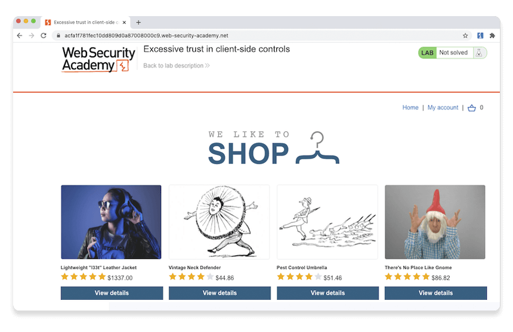

このチュートリアルでは、Burp Proxyがインターセプトしたリクエストを変更する方法を学びます。これにより、Webサイトが想定していない方法でリクエストを操作した場合の反応を確認できます。"ラボ"と呼ばれる意図的に脆弱性を作り込んだWebサイトを使用して、実際の脆弱性を発見し、悪用する方法が確認できます。
Webセキュリティアカデミー
この先に進むにはportswigger.netのアカウントが必要です。まだ持っていない場合、登録は無料で、Webセキュリティアカデミーへのフルアクセスが可能となります。
ステップ1: Burpブラウザで脆弱性のあるWebサイトにアクセスする
Burpで、Proxy > インターセプトタブを開き、インターセプトが無効になっていることを確認します。
Burpブラウザを起動し、次のURLにアクセスします:
https://portswigger.net/web-security/logic-flaws/examples/lab-logic-flaws-excessive-trust-in-client-side-controlsページが読み込まれたら、Access the labをクリックします。プロンプトが表示されたら、自分のportswigger.netのアカウントでログインしてください。数秒後、あなた専用の偽のショッピングサイトが表示されます。
ステップ2: ショッピングアカウントにログインする
ショッピングサイトで、My accountをクリックし、次の認証情報を使ってログインします。
ユーザ名: wiener
パスワード: peter
ちょうど100ドルのストアクレジットを持っていることに注目してください。
ステップ3: 買いたいものを探す
Homeをクリックすると、トップページに戻ります。オプションを選択すると、Lightweight "l33t" leather jacketの商品詳細が表示されます。
ステップ4: カートに入れる機能を調査する
Burpで、Proxy > Interceptタブを開き、インターセプトを有効にします。ブラウザで、レザージャケットをカートに入れて、POST /cartリクエストをインターセプトします。
注
ブラウザがバックグラウンドで何か他のことをしていると、最初にProxy > インターセプトタブに別のリクエストが表示されることがあります。この場合は、上のスクリーンショットにあるようにPOST /cartリクエストが表示されるまで転送をクリックします。
インターセプトされたリクエストを調べると、ボディにpriceというパラメータがあり、これが商品の価格(セント)と一致していることに気づきます。
ステップ5: リクエストを変更する
priceパラメータの値を1に変更し、転送をクリックすると、変更したリクエストがサーバに送信されます。

再度インターセプトを無効にして、以降のリクエストが中断せずBurp Proxyを通過できるようにします。
ステップ6: 脆弱性を悪用する
Burpブラウザで、右上のバスケットアイコンをクリックすると、カートが表示されます。ジャケットが1セントで追加されていることに注目してください。
注
Webインタフェースだけでは価格は変更できません。この変更ができたのは、Burp Proxyのおかげです。
注文するボタンをクリックすると、非常にリーズナブルな価格でジャケットを購入できます。
おめでとうございます。Webセキュリティアカデミーの最初のラボを突破しました。また、Burp Proxyを使ってHTTPトラフィックをインターセプト、レビュー、変更する方法も学びました。
次のステップ - ターゲットスコープの設定
次へこのチュートリアルの内容
- Burp Suiteのダウンロードとインストール。
- Burp ProxyによるHTTPトラフィックのインターセプト。
- Burp Proxyによるリクエストの変更。
- ターゲットスコープの設定。
- Burp Repeaterによるリクエストの再発行。
- 初めてのスキャン実行。
- 次は？